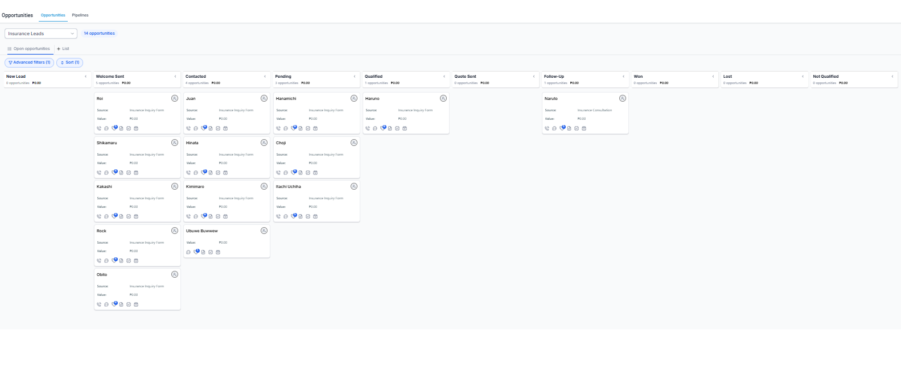
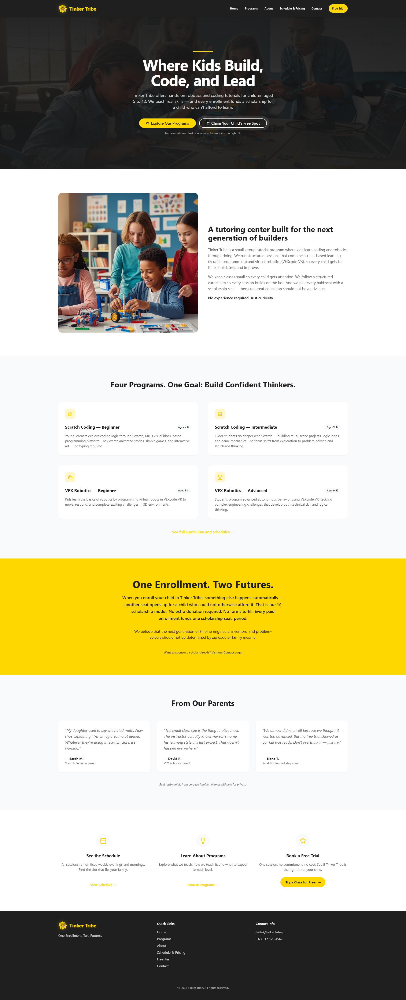
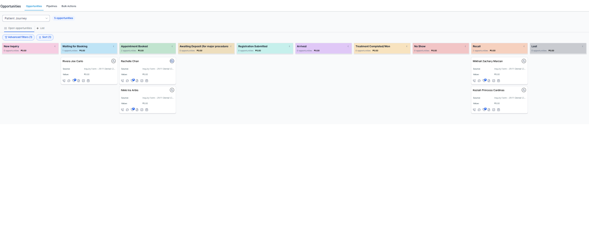
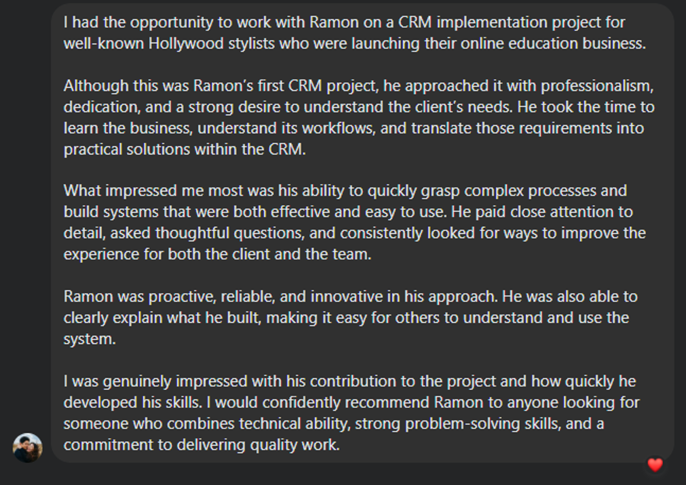
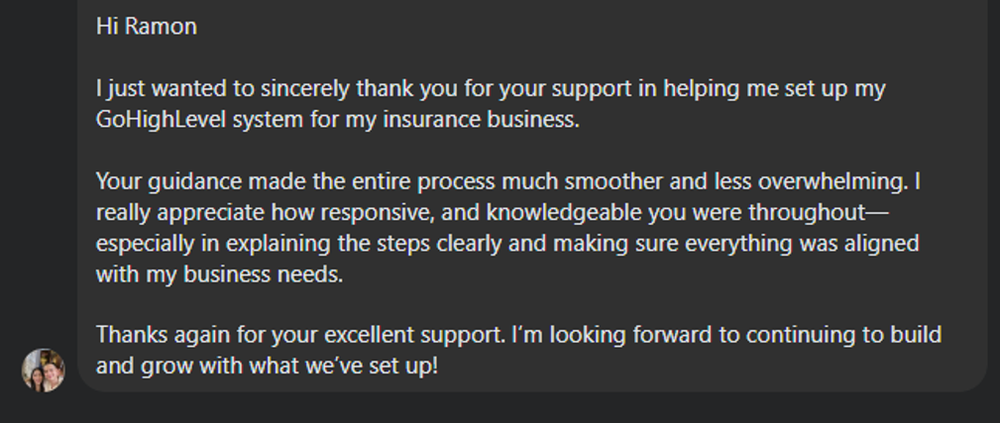

NON-LIFE INSURANCE AGENT - ELE INSURANCE (PH)
LIVE
1 / 3Zero Lead Loss System cold leads — every inquiry followed up in minutes
BUILDING FOR SMALL & MEDIUM BUSINESSES
For service businesses tired of losing leads, we build done‑for‑you GHL systems that follow up automatically, so no lead ever falls through again.
10+ years
IN OPERATIONS
GHL Certified
SPECIALIST
120+ Automations
BUILT
PROUDLY BUILDING SYSTEMS FOR
Dental
Hairstyling
Non-Life Insurance
Coaching
Health & Wellness
THE PROBLEM
01
You finally get an inquiry but you're in the middle of a job, a meeting, or just trying to breathe. By the time you get back to them, they've already moved on. It's not that they didn't want your service. You just weren't the first one to respond.
02
You told yourself you'd message that lead tomorrow. Then tomorrow became next week. Now you can't even remember who you were supposed to follow up with or what you said. When your entire pipeline lives in your memory, deals die quietly and you never even notice.
03
You've built this business on sheer drive and personal effort and it got you here. But that same hustle is now the ceiling. You can't be in five conversations at once. You can't manually chase every lead forever. At some point, the business needs to run without you carrying it.
THE HARD TRUTH
Most SMBs don't lose business because of bad service,
they lose it because no one followed up fast enough.
WHAT I DO
Four outcomes most SMBs come to me for. Each runs on the same connected system, built around how you actually work.
LEAD CAPTURE
Every call, form, and DM lands in one place and gets an instant first response even when you're on a job.
AUTOMATION
New leads get nurtured automatically until they book or buy, in messages that sound like you, not a robot.
BOOKING
Prospects book in, get reminders, and show up, the system confirms and recovers no-shows for you.
REACTIVATION
Past leads who've gone quiet become booked appointments, often within the first week of the campaign.
HOW IT WORKS
01
20 MINUTES
We map how leads come in and where they fall out. You leave knowing exactly what's leaking whether or not we work together.
02
YOUR PACE
I design the system around your real process, not a template. You review it before it goes live. Nothing breaks your current setup.
03
YOUR CALL
You get a system that runs itself plus a plain-language walkthrough. Want me to keep improving it? That's the Partner option.
~/leads/pipeline — what your system looks like, running
SYSTEM LIVE
NEW 2
Form — website
auto-reply sent
Missed call
text-back fired
FOLLOWED UP 3
Maria R.
SMS - Day 2
IG Inquiry
Nurturing
DB reactivation
Warm
BOOKED 2
J. Cruz
Oct 12th
Service call
Confirmed
RESULTS
A few businesses I've quietly taken off manual mode.
NON-LIFE INSURANCE AGENT - ELE INSURANCE (PH)
LIVE
1 / 3Zero Lead Loss System cold leads — every inquiry followed up in minutes
INSTAGRAM — GHL AUTOMATION - COUPLE HOLLYWOOD STYLIST BASED IN LOS ANGELES, CA (US)
LIVEScreenshot not yet added
Vanity → Pipeline turn social followers into booked calls
SLACK — GHL UNIFIED SYSTEM - MEDSPA (US)
LIVEScreenshot not yet added
One System full visibility on every lead
COMPLETE GHL ECOSYSTEM — TINKERTRIBE (ROBOTICS TUTORIAL BUSINESS - (PH)
LIVE
1 / 11Zero → Full from manual to fully automated
PATIENT MANAGEMENT SYSTEM — 29:11 DENTAL CLINIC (PH)
LIVE
1 / 11First Inquiry → Lifelong Care One connected patient journey.
Don't take our word for it. Here's what clients said after we built theirs.

Sam A.
Marketing Head and EA

Enrique E. III
Non-Life Insurance Agent
WHY ME
I spent more than a decade in operations across different industries learning firsthand how good businesses lose money to small, repeatable gaps. The forgotten follow-up. The lead nobody logged. The no-show nobody chased.
So I don't think like a "tech guy." I think like an operator who happens to build in GoHighLevel. I care less about features and more about whether the system matches how your day actually runs.
One detail worth mentioning: this site, the follow-up you'll get, and the call you're about to book all run on the exact system I'd build for you. You're not reading about my work, you're inside it.
10+ years
IN OPERATIONS & SYSTEMS
GHL Certified
SPECIALIST
5+ industries
WORKED ACROSS
Your process
NOT A TEMPLATE
FAQ
Most systems are fully built, tested, and handed over within 2 to 4 weeks depending on the complexity of your pipelines and automations.
No. If you don't have an account, we'll set one up for you. If you already have one, we can build directly inside your existing workspace.
That's exactly why we build this. The complex automation runs in the background. Your daily interface is usually just one screen where you see new leads and reply to messages.
Every build is custom scoped after our audit, but most complete system builds range between $1,500 and $3,500 depending on complexity and the number of pipelines needed.
You get a full handoff and training. If you want ongoing optimization and support, I offer a Partner retainer. If you want to run it yourself, you have the keys.
While I specialize in building unified systems in GoHighLevel, we can often integrate your existing tools if you're married to them. We'll discuss this in the audit.
Templates are one-size-fits-all. We design the system around your actual sales process, not a generic template. It matches how your day actually runs.
READY WHEN YOU ARE
Twenty minutes. We map where your leads are leaking and what it'd take to fix it.
You leave with clarity — whether we work together or not.